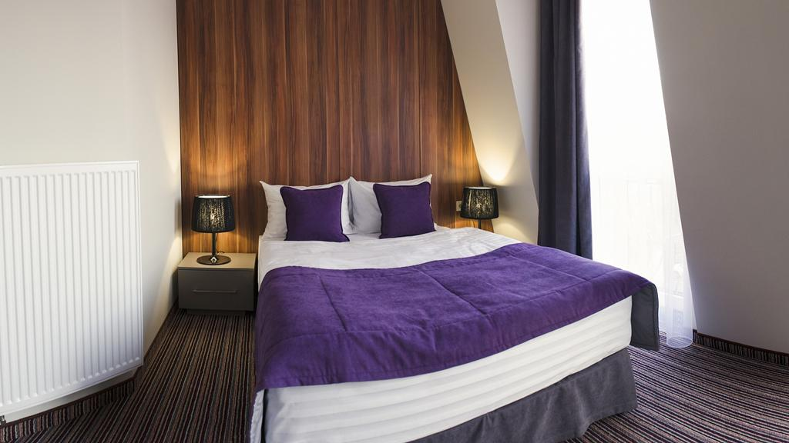
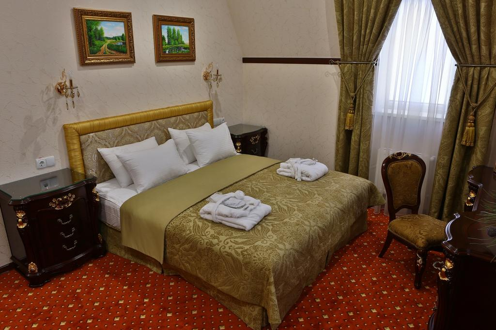
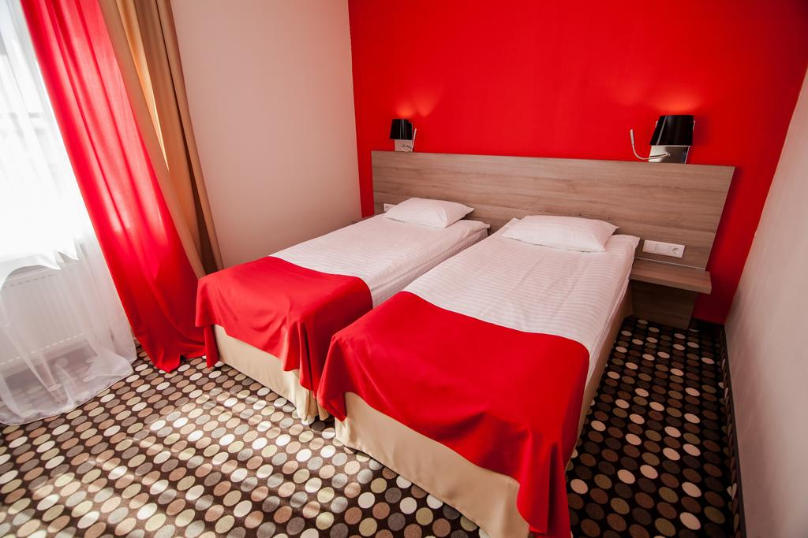
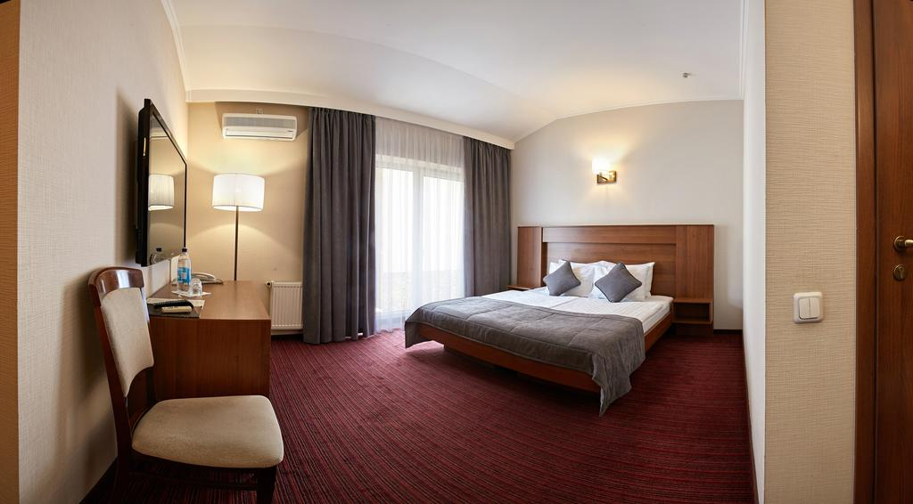
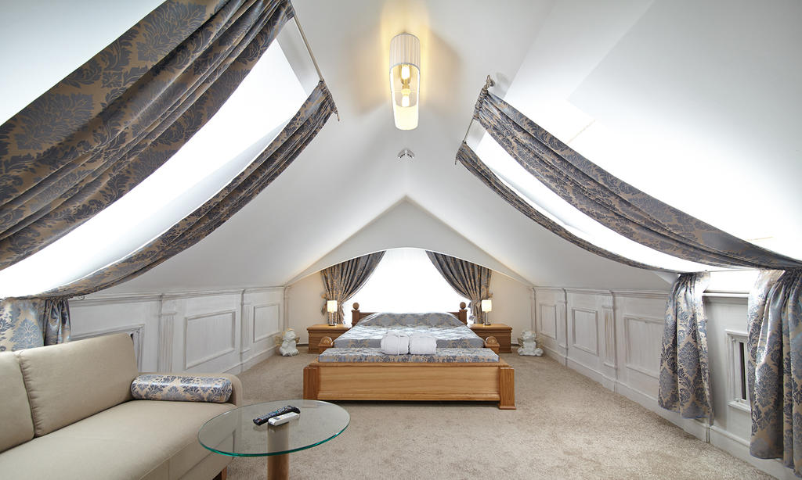
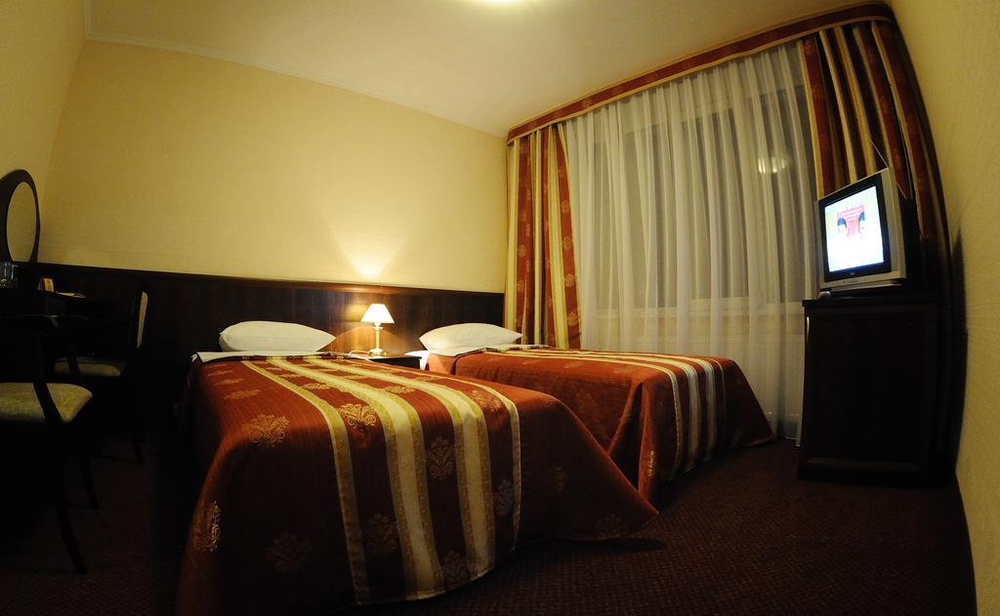

Бутик-готель "Централь"

Бутик-готель "Централь" розташований у місті Рівне. До послуг гостей загальний лаунж, бар, ресторан, номери з кондиціонером і власною ванною кімнатою, цілодобова стійка реєстрації і безкоштовний Wі-Fi на усій території. Готельні номери налічують письмовий стіл і шафу для одягу. Щоранку в готелі подають сніданок "шведський стіл". Розташування цього помешкання - одне з найкращих у Рівному! Воно подобається гостям більше, ніж розташування інших помешкань у цьому районі. Це місце розташування особливо подобається парам - вони оцінили його на 9,6 для поїздки удвох.
Це помешкання пропонує найкраще співвідношення ціни й якості у Рівному! Порівняно з іншими помешканнями в місті, тут гості отримують більше за ті ж гроші.
Ціна 750грн.
16 Lypnya 7A, Рівне, 33000
Готель Україна Рівне

Цей 4-зірковий готель розташований у центрі Рівного всього за 10 хвилин їзди від Рівненського краєзнавчого музею та драматичного театру. Інфраструктура закладу налічує сауну, фітнес-центр та номери з кондиціонером. Класично оформлені помешкання готелю "Україна" забезпечено телевізором із плоским екраном, міні-баром і шафою. Також у готелі облаштовано номери для осіб з обмеженими фізичними можливостями. У ванних кімнатах встановлено душ або ванну. Гості можуть скуштувати страви європейської кухні у ресторані, де також подається сніданок "шведський стіл. За хвилину ходьби від готелю "Україна" розміщена автобусна зупинка "Театральна площа". Відстань від готелю до залізничного вокзалу Рівного становить 2 км, а до Міжнародного аеропорту "Рівне" — 5 км. За запитом надаються послуги трансферу.
Розташування цього помешкання - одне з найкращих у Рівному! Воно подобається гостям більше, ніж розташування інших помешкань у цьому районі. Це місце розташування особливо подобається парам - вони оцінили його на 9,8 для поїздки удвох.
Це помешкання пропонує найкраще співвідношення ціни й якості у Рівному! Порівняно з іншими помешканнями в місті, тут гості отримують більше за ті ж гроші.
Ціна 1070грн.
вулиця Соборна 112, Рівне, 33028
Готель "Оптіма Рівне"

Готель "Оптіма Рівне" розташований за 2 хвилини ходьби від алеї Троянд. Гостям надається безкоштовний Wi-Fi. Номери мають окрему ванну кімнату та оснащені кондиціонером і телевізором з плоским екраном. Гості можуть повечеряти в ресторані готелю. Піша прогулянка від готелю до різноманітних закладів харчування займає 10 хвилин. До послуг гостей цілодобова стійка реєстрації та камера зберігання багажу. Від готелю "Оптіма Рівне" до річки Устя можна дійти за 12 хвилин. Відстань до залізничного вокзалу Рівне становить 1,3 км. За додаткову плату гості можуть скористатися послугами трансферу.
Розташування цього помешкання - одне з найкращих у Рівному! Воно подобається гостям більше, ніж розташування інших помешкань у цьому районі. Це місце розташування особливо подобається парам - вони оцінили його на 9,0 для поїздки удвох. Це помешкання пропонує найкраще співвідношення ціни й якості у Рівному! Порівняно з іншими помешканнями в місті, тут гості отримують більше за ті ж гроші.
Ціна 1041грн.
вулиця Соборна 112, Рівне, 33028
Готель "4х4

Готель "4х4" з приватною автостоянкою розташований за 6 км від міста Рівне. На усій території надається безкоштовний Wi-Fi. Усі номери готелю "4x4" обставлені дерев'яними меблями і оснащені телевізором. Ванні кімнати укомплектовані тапочками і феном. Страви української кухні подають в стильному ресторані "Offroad" з каміном, страви європейської кухні - в ресторані "Porsche'n". У барі готелю можна замовити напої. У готелі "4x4" є критий басейн та більярдна кімната. До автомагістралі М06, якою можна дістатися до Львова, 10 хвилин їзди.
Це місце розташування особливо подобається парам - вони оцінили його на 8,8 для поїздки удвох.
Це помешкання пропонує найкраще співвідношення ціни й якості у Рівному! Порівняно з іншими помешканнями в місті, тут гості отримують більше за ті ж гроші.
Ціна 650грн.
вулиця Соборна 112, Рівне, 33028
Готель "Підкова"

Готель "Підкова" розташований за 3 км від центру міста Рівне та залізничного вокзалу. До послуг гостей безкоштовний Wi-Fi, критий плавальний басейн, сауна та номери з кондиціонером. В індивідуально оформлених номерах готелю "Підкова" є чайник і холодильник. Ванні кімнати укомплектовані феном та капцями. Відвідувачам ресторану готелю "Підкова" запропонують страви місцевої та європейської кухонь. Напої можна замовити в барі. Гості також матимуть можливість пограти в більярд, розслабитися за масажем або відпочити в сауні.
Це місце розташування особливо подобається парам - вони оцінили його на 8,0 для поїздки удвох.
Це помешкання пропонує найкраще співвідношення ціни й якості у Рівному! Порівняно з іншими помешканнями в місті, тут гості отримують більше за ті ж гроші.
Ціна 990грн.
вулиця Соборна 112, Рівне, 33028
Готель "Мир"

Цей готель розташований за 15 хвилин ходьби від залізничного вокзалу міста Рівне. Гостям пропонується сніданок "шведський стіл" та номери, які оснащені телевізором з плоским екраном. Стійка реєстрації заїзду працює цілодобово. Усі номери в готелі "Мир" оформлені в класичному стилі та обладнані письмовим столом. У деяких ванних кімнатах є душ, а в інших - гідромасажна ванна. Гості готелю "Мир" можуть скуштувати страви європейської кухні у власному сучасному ресторані, де також доступний сніданок. Завдяки розміщенню готелю неподалік від центру міста гостям буде легко потрапити до визначних пам'яток та розважальних закладів Рівного. Піша прогулянка до парку Шевченка з розважальними атракціонами та Драматичного театру триватиме 10 хвилин.
Готель "Мир" розташований за 5 хвилин їзди від автовокзалу Рівного, звідки можна без пересадок дістатися до Львова.
Це місце розташування особливо подобається парам - вони оцінили його на 9,2 для поїздки удвох.
Ціна 510грн.
вулиця Соборна 112, Рівне, 33028